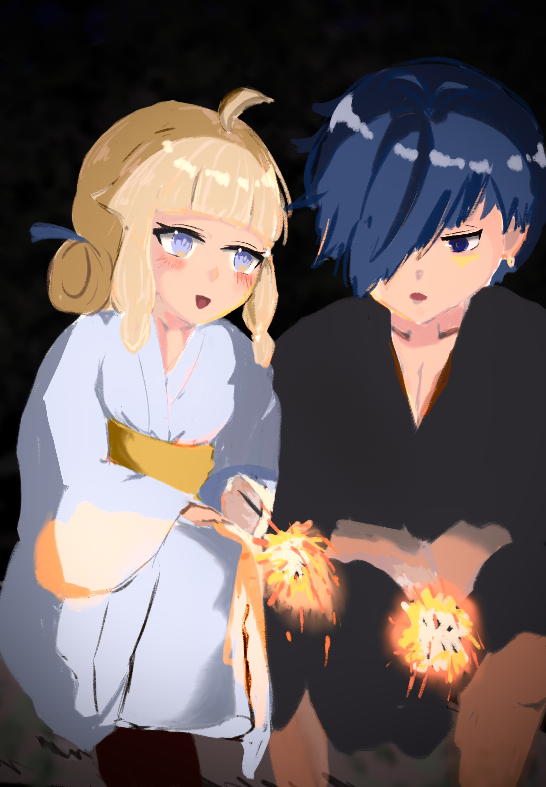
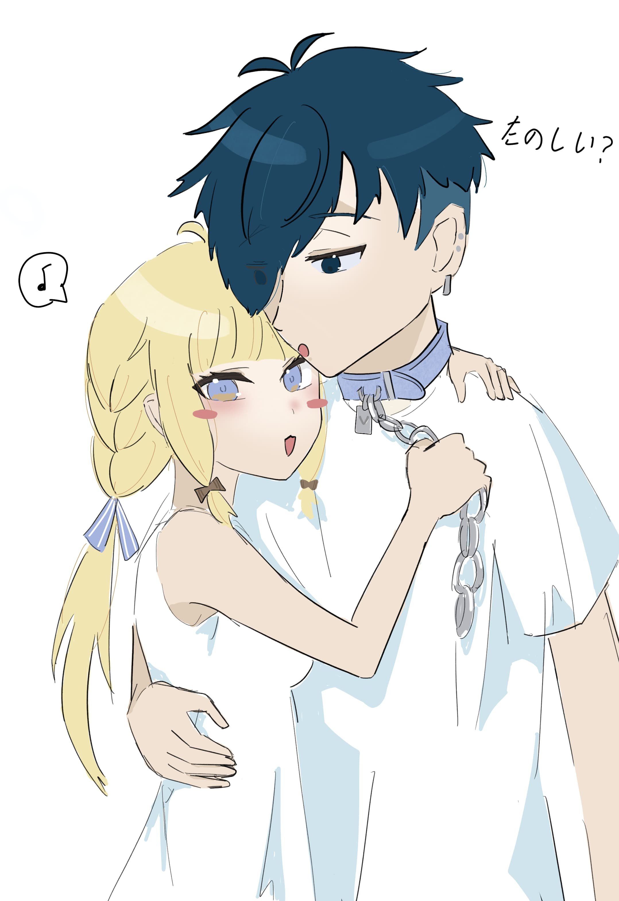

𝕆𝕌ℝ 𝕊𝕋𝕆ℝ𝕐
中秋節
初詣
線香花火
百日
項圈

中秋
夜裡的風帶著淡淡涼意，窗外一輪滿月懸在天際。
街上時不時看到商人吆喝著，充滿著糯米香，整個城市都染上柔和的金色。
瑠璃端著剛泡好的茶走到陽台上，看到靠在欄杆邊的バニ。
他一手拿著菸，一手托著臉，半眯著眼看月亮。
淡淡的煙霧在他周圍繞出模糊的光暈，看起來格外安靜。
「バニ，吃月餅還有糰子嗎？」
「嗯？我還以為妳早就開動了。」他轉過頭，捻熄了煙，嘴角帶著笑走回了客廳。
瑠璃坐到茶几旁，把月餅盒放在桌上。
「這是紅豆的、這個有鹹蛋黃，還有一個是——」
「我知道，妳最喜歡的蛋黃酥。」他替她拆開包裝，順手遞過去。
陽台的床還開著，微涼的秋風輕輕吹著窗簾。風從他髮梢拂過，帶著一點蛋香和甜味。
瑠璃咬了一口月餅，含糊地說：「我最喜歡這種一起吃東西的時候了。」
バニ笑了笑，順手擦了擦瑠璃的嘴角：「妳每次都吃得特別認真，像是小松鼠一樣。」
「那バニ呢？」
「我？」他抬頭望著月亮，頓了頓，說：「我喜歡現在這樣。風不太熱，妳在旁邊，月亮也不錯。」
「……哇，好浪漫喔。」瑠璃笑著靠過去，偷偷去握住他的手。
「這不叫浪漫，這叫——被妳傳染的中秋氣氛。」
瑠璃笑得更開心，月光灑在兩人交疊的手上，亮得幾乎要融化。
遠處傳來有人放煙火的聲音，バニ抬眼望去，煙火在夜空裡綻開一瞬。
他轉頭看著瑠璃，那光也在她眼底炸成一朵小小的花。
「バニ，明年的月亮還要一起看喔。」
「笨蛋，那當然。」
施工

施工中

線香花火
夜風帶著潮濕的夏日氣息，河堤邊聚著零星的人群，手裡的紙籤隨著風輕輕晃動。今晚是七夕祭典。
瑠璃換上了浴衣——藍底點綴著細小白花，腰間的緞帶被她認真地繫好；頭髮也和往常的雙馬尾不一樣，盤了起來。走在燈籠的光影下，雖然一副若無其事的樣子，但內心還是暗自期待他會說些什麼。
「你怎麼今天不發一語的？」
「浴衣、很可愛喔」
vanilLa牽著瑠璃的手，語氣平淡卻帶著一絲笑，眼神還是若無其事地落在她身上。
瑠璃抿著唇，耳尖微紅，顯然還是被對方的直球攻擊到了，輕哼一聲：「ふん、謝謝誇獎。」
---
在人群散去的夜裡，他們在河堤邊坐下，手裡各拿著一支線香花火。火光小小的，卻在黑暗中閃爍得格外安靜。
「好像星星掉下來一樣。」
瑠璃握著那一點光，看著它抖動，眼睛也映出了光點。
vanilLa偏頭看她，嘴角勾著：「お前のほうが綺麗だよ。」
「バニっ……突然說這種話，不會害羞嗎？」
「別に？思ったこと言っただけ。」
瑠璃紅著臉，低下頭去掩飾。火花「啪」的一聲，最後落在地上，像極了短暫卻燦爛的夏夜。
---
線香花火熄滅後，兩人抬頭仰望。七夕的夜空，星河清晰。人們的紙籤掛滿竹枝，隨風沙沙作響。
瑠璃忽然湊到vanilLa耳邊，小聲說：「我的願望......是希望每年七夕都可以和你一起看星星。」
vanilLa愣了一下，隨即低低笑了出聲，伸手揉了揉她的頭髮。
「我的願望是......希望瑠璃可以一直待在我身邊。」
「所以說，已經實現了。」
瑠璃心口一顫，抬頭看著他，星光倒映在眼底，彷彿真把夏夜所有的浪漫都裝進去了。
百日
.jpg)
房間的鏡子前，少女在兩邊的馬尾綁上水藍色的蝴蝶結，她晃了晃頭髮，最後在整理一下瀏海，鏡子映著她滿意的笑容。
「好了！非常可愛！」
--
在約好的碰面地點，瑠璃在盯著手機的聊天室和張望四周來回切換，十分期待今天的約會。畢竟這個她好不容易說服了這個八百年不出門、說只要出門就會融化的vanilLa一起出門去咖啡廳跟逛街。
終於在幾分鐘後瑠璃看到了她心心念念的身影。
「バニ！」
瑠璃小跑步來到了vanilLa眼前，在離他一個手臂的距離前停下，抬起雙手轉了一個圈。
「怎麼樣，可愛嗎？這是最近新買的衣服----」
話還沒說完，瑠璃就注意他微紅的臉頰，就算帶著口罩還是逃不過瑠璃的雙眼。
「女朋友太可愛，害羞了？」
「嗯，很可愛。」
「..！」
項圈

午後的陽光斜斜落進屋內，窗簾被風吹得微微晃動，光影在地板上拖出柔軟的邊線。空氣裡浮著細小的塵埃，靜得幾乎能聽見時間流動的聲音。
VanilLa 半躺在沙發上，頭靠著扶手，手機滑到一半便停在那裡。深藍色的瀏海垂下來，遮住了一隻眼睛，也遮住了他大半的表情。呼吸平穩，像是真的睡著了，又像只是短暫放空。
瑠璃放輕腳步靠近。
她的動作很慢，像是在確認他沒有醒來。指尖捏著一條淺藍色的皮革項圈，銀色的吊牌在光線下閃了一下，上面刻著小小的「V」。
她屏住呼吸，俯下身。
皮革貼上皮膚的瞬間還帶著一點涼意。
——喀噠。
聲音清脆得不合時宜。
VanilLa 的肩膀明顯僵了一下。
下一秒，他睜開眼，視線先是失焦，像是在辨認自己在哪裡。過了兩秒，困意被強行拉回現實，他皺了下眉，下意識抬手摸向脖子。
指尖碰到陌生的觸感時，他停住了。
「……は？」
聲音低低的，帶著剛醒的沙啞。
他坐起身，動作不急不徐，卻明顯慢了半拍。視線順著指尖落在那條項圈上，又順著吊牌的方向，移向旁邊那個笑得一臉得意的人。
「喂。」
語氣不重，也沒有生氣，只是單純的困惑。
瑠璃忍不住笑出聲，伸手戳了戳那枚吊牌，金屬輕輕晃動，發出細小的聲響。
「很適合你啊，バニ。」
他看了她一眼，又低頭看了看那條項圈，沉默了幾秒。
「……妳在幹嘛啊。」
不像責備，更像是在確認自己是不是還沒完全清醒。
他抬手抓了抓頭髮，嘆了口氣，語調有點無奈。
「這是什麼……新的玩法？」
「不覺得很可愛嗎？」
瑠璃湊近了一點，像是在觀察他的反應，
「而且——有種被標記的感覺。」
那句話說出口的瞬間，他的動作停住了。
他沒有立刻回話，只是別開視線。耳尖卻在不知不覺中染上顏色，連自己都沒察覺。
「別亂講。」
聲音比剛才更低。
他伸手想去解扣環，卻在半途停住，最後只是把手放回腿上。
瑠璃抓住他的袖子，輕輕拉了一下。
「一下下就好嘛，我挑很久的。」
他看向她。
那雙眼睛裡沒有惡作劇過頭的狡黠，只是單純的期待。
VanilLa 靜了一會兒，像是在心裡權衡什麼，最後只是低聲嘆氣。
「妳要是喜歡這種東西，」他語氣刻意放得平淡，「自己戴就好了吧。」
話一出口，他就後悔了。
瑠璃卻瞬間亮了眼睛。
「那下次一起戴！」
「誰要跟妳一起——」
吐槽卡在一半。
他伸手把她拉近，動作有點粗魯，又不是真的用力。她的額頭撞上他的胸口，悶悶地笑出聲。
「安靜一點。」
他低聲說，把下巴輕輕擱在她頭上。
項圈的皮革貼著他的皮膚，仍然有點涼，卻被體溫慢慢覆蓋。
他沒有再提要拿下來。
「真的，就一下下。」